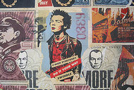
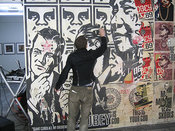
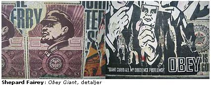
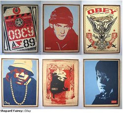
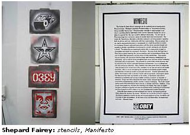

Obey Giant (V1 Gallery)
From The Giant: The Definitive Obey Giant Site
{kind=link}
A Shepard Fairey show that took place at the V1 Gallery in Kopenhagen, Denmark, from April 30th to June 6th, 2004.
Article/interview from Kopenhagen.dk:
|  |  |
{kind=link}
{kind=link}
{kind=link}
"Some people look at my work and go: 'Oh, it's condemning capitalism.' No, not at all, I'm a capitalist. I believe in capitalism, I believe it motivates people, that competition is good. I believe it can be ruthless; there should be good checks and balances for it, but the best checks and balances are the consumers themselves, not some sort of government regulations". kopenhagen fik en snak med den aktuelle street-art superstar Shepard Fairey, aktuel på V1 Gallery. Interview og foto: Torben Zenth.
Shepard Fairey Obey Giant 30. april - 6. juni 2004 V1 Gallery Absalonsgade 21B, 1658 København V web site: www.v-1.dk Åbent torsdag kl. 16-19, fredag kl. 16-20, weekend kl. 12-16
Can you tell how this exhibition came to be?
How far back do you wanna go?...
I’ve been doing street art for 15 years and one of Jesper's friends Migo, had a graffiti magazine called Magic Moments. He would send the magazine to me and I would send stickers back to him.
This past summer I was in a street art exhibition in Berlin and Jesper and Migo and some other friends came there and they saw the installation that I did, and asked me if I would want to do the show here. I did a lot of street art while I was in Berlin which they saw, so I think they decided I was worth a solo show (laugh)...
Can you shortly tell how you became what you are, how you started with all this?
I grew up in southern USA, in South Carolina and I wasn’t really around much graffiti or avant-garde art but I always liked to draw. When I was 14 I started skateboarding and listening to punk-rock and within skateboarding and punk-rock there was a lot of hand made art like stencils, stickers, drawing on your t-shirts. It was a creative culture. Instead of just drawing still lives or fruits or things like that, I actually applied the talent that I had to making stickers and stencils of the things that I was into – band-logos and things like that.
Then later when I went to college, I went to art school, there I was trying to teach a friend how to make a stencil and was looking for a picture to practice on, just looking into newspapers for any image, and I saw a picture of Andre the Giant – the wrestler. I thought it was funny and I said: “why don’t you practice on this.” He didn't want to do that, it was stupid, he said, and for some reason it struck me as odd that he wouldn’t even practice on it.
I decided that I wanted to turn this thing into some sort of icon, you know, making stickers and stencils with it and inserting it into the culture. Rap music was becoming more popular within skateboarding and ‘posse’ was a popular word in a lot of hip hop songs, so when Andre the Giant got a posse I thought it would be an inside joke, but what I noticed after I'd put some stickers around, on stop signs, skate spots and some of the clubs, that people that were not even my friends were responding to it. I overheard people talking about it when I was in a grocery store. I saw someone who pealed it off and put it in front of his baseball cap.
{kind=link}
Then I started thinking about how people absorb images in public. I always looked at it when I saw a punk-rock sticker or skateboard sticker, as comforting since people of the same subculture where near by. But I've never though about a sort of broader implication of the control of public space and, you know, advertising as the dominant graphic force in public. So, just in putting a few stickers around and seeing the reactions I started thinking of some of these things and I thought about how things become trendy and no one want to be the last one in finding out about something, so if there is something out there that people don’t know what is for, they wanna know and they ask and it's gaining power, surely, through people’s curiosity.
I thought it would be a fun experiment to take something that I thought was really absurd and silly and just by repeating it a lot, see if I can turn it into something bigger. The act of creating something from nothing was something I was fascinated by, plus it was just fun to be mischievous and put stickers up, so I started doing that and before too long a local paper ran a contest asking: “Who can say what this ‘Andre Giant has a possse’ sticker is about?” and they printed the image in the paper with a circulation of 15,000, way more copies that I've even put up in the street. This was in the summer of 1989.
{kind=link}
Then I started thinking about that if you are able to manipulate the press you can make something even bigger. For a long time just the original sticker and then my other art was a separate thing. But the more I got known for that image I realised that it seems to really affect people and I decided to branch out and to off-shoot images and go from just stickers to making stencils and then later posters.
I sabotaged billboards when a candidate for mayor was running; I’d put a huge face all over his face. There was an advertising campaign that Coca-Cola was doing for a new product, which was supposed to look like it was an underground soda, but it really was made by Coca-Cola and I was offended, not by Coca-Cola because I drink Diet-Coke all the time, but because I felt like they were being underhanding, sneaky. So I changed around all the ads.
It just grew into the major part of my art. I travelled all over the world putting stuff up, and I would take out small ads in skateboard- and punk rock magazines saying: “Repetition works - send a self-addressed stamped envelope for stickers and information.” Then I had to pay for the ad, pay for the postage and pay for the stickers, and people were not sending me money, but I did that because I didn’t want them to treat stickers like a commercial commodity. I wanted them to participate in the experiment, so I had a little manifesto that I had written, that basically just talked about some of what I thought was the sociological aspects of the project, and I would send it back out with the stickers and build up a grassroots network of people. But, quickly I started realizing that I would have to make money somehow to fund the projects, so I started making some t-shirts, and eventually I would sell some t-shirts and posters to pay for all the stuff that I was sending out or putting up on the streets. Yeah, that's how it evolved.
|  |
{kind=link}
Now you are also working for major corporations...
Yeah, the interesting thing was I never intended to be a graphic designer. I studied illustration, and I did a lot of screen-printing in college, which I liked because of two reasons: first of all you could experiment with different colours and changing the order of the screens. The process allows a lot of room for experimentation and you also didn’t have just one original like with a drawing or a painting, but multiples. You could keep a few of the versions that you liked the best, give some away, sell some, send them out to the shows. It was a very accessible art form, cheap and that's what I always liked about, you know, t-shirts and skateboards and all the other things that I thought had nice arts. They were very utilitarian, affordable, so I wanted to make my art that way.
Before I graduated from school, while I was still a junior, I started a screen-print shop, knowing that once I graduated I wouldn’t have access to equipment any more, so I invested in some screen-printing equipment and started a studio. And this is also how I was producing all my posters and my stickers, my t-shirts. And I had a skateboard ramp in there and we would do little art shows... It was a cool scene but I wasn’t really making much money from it. But over the years of making posters - and people seeing them - I developed kind of a graphic language with the posters, some through practice and through studying propaganda art and constructivism. Companies started to contact me about: ”We like what you’re doing, can you do graphics for us?” But I didn’t know how to use the computer; I was making everything by hand.
Then I moved from Rhode Island, and I decided to sell my screen-printing business because I got in pretty far in debt. I moved to California to work for a friend who taught me how to use the computer. I was also tired of just pulling a squeegee - you know screen-printing - the act of printing is not creative. I was spending some of my time making my stuff, but a lot of my time on the screen printing process, burning the screens, making the separations, printing, and I thought it would be better – you know - to use my talents for design, even if it was for companies. I preferred to do that. At least I would always be sharpening my skills and make money from that, and then do my art during the evenings.
Not having to worry about also selling art to make a living, because one of the things that I always felt strongly about, is that if you are an artist who only makes money from your own fine art, then you don't really have any choice but to worry about the commercial trends in the art world - in the fine art world - because if you don't sell enough work to survive, then you either have to stop being an artist or figure out the way to assimilate towards what the trends are.
I always felt that if I was making enough money to live, I could do whatever I want with my art, and if people like it and it sells, fine, if it doesn’t, fine. In fact that’s the way it went for a long time. I printed posters, I put a lot of them on the streets, and then I'd print some on thicker paper to sell, but they were just accumulating in my studio. They weren't selling. And then finally, I started to get press and a lot of magazines, and that was that... - I started my website and I didn’t realize how many people go on the Internet...
|  |
{kind=link}
{kind=link}
You earn your money from design, and then you make your art?
Yeah - well I make some money from my art. Between the expenses of travelling and making the posters, paying for my studio space, paying for the girl who sends my posters out and the guy who helps me print, there is not much money left over.
You are not a rich man?
No....
Is there a message in your work?
The message with my work is: ”question everything…question everything that you are bombarded with.” I think the main things that I'm interested in, and that I'd like to deconstruct with my work, is how emotionally potent images and phrases are used to indoctrinate people, whether it's advertising or politics. How everything is turned into a symbol and that you have to be very suspicious of what kind of spin people are putting on things.
In fact, some people don't really understand that, they only think of my work as an advertisement for me. They don't really understand that even with my own work I'm saying: ”Be aware of this too, be aware of me, be aware of what I’m doing, be aware of what companies are doing.” I feel like my work is non-threatening, it's benevolent, but at the same time it's designed in the context of the public space... you being confronted with something to look at, in relation to everything else that is around it. Hopefully it will catalyse some sort of discussion about whatever ad, or any sort of seductive media.
There's a whole very amazingly researched and crafted art of persuasion in advertising and politics. I feel like some people just kind of walk around like zombies and they complain that things aren’t the way they want - but yet, that's why I use the ”Obey.” It really means the opposite, questioning or disobeying. ”Snap out of it.” Some of the work that I do is more over the political link. I have the pieces in there that say like ”this is your god,” with the money imagery – people’s obsessions with money.
{kind=link}
It’s also about- not just the money- but putting figures, whether it’s rock-stars, actors, politicians, on pedestals. Sort of the currency of celebrity and obedience as a form of currency that if you can get people to do what you want, then that’s just as good as having the money to pay them to do it. If you can figure out the way to psychologically manipulate them to do what you want, then you don’t have to pay them to do what you want. So that’s really valuable. And there are other things like ”more militery - less skools” where military and schools are misspelled suggesting that we need to be - especially in the US - investing more in the future with people’s education... and global domination. I have an anti-Bush poster coming out and I did one when the war started... but a lot of the work is also just about people that have inspired me as musicians, people that blazed the trail, did it their way, in punk-rock, in hip hop, and then other ones in more cautionary ways, like ”beware of this dictators” whether it's Nixon or Mao. Just because I present an image, people always assume... that if you present an image then you are endorsing it, unless you have a circle around it with a line through.
I just like to leave some things more open for interpretation. I think history is important because -what's the phrase - if you don't know your history you’re doomed to repeat it, so it’s kind of about that.
I like to make graphics. It’s not all serious. Formally I like the problemsolving of creating graphics, figuring out ways to make them powerful.
|  |
{kind=link}
Is there any kind of conflict between your work as a ”street-artist” and working for major companies?
Everyone asks that... No, because me boycotting a major company by not working for them is not gonna change anything. People need to live, they need to eat, and it's hard to survive as a creative person, it's one of the most difficult fields you can be in. There are graphic designers with just as much talent lined up for miles to do that work. It will not affect these companies in any way if I don’t do their work.
Luckily, they’re convinced that it will affect them if I do, which I think is as an amazing scam that I pulled off. It's not a black & white thing - like us versus them. I haven't had that mentality since I was... maybe a teenager. I want people to question things but I'm not an anarchist. My version of utopia is just improving the system by having people be more discriminating about what they are doing, who they allow to take power, who they’re willing to give their money to, whether it's a company or church or whatever, but not damming those things. It's partially the responsibility of the companies to be more ethical but it's more the responsibility of people. Some people look at my work and go: ”Oh, it's condemning capitalism.” No, not at all, I'm a capitalist. I believe in capitalism, I believe it motivates people, that competition is good. I believe it can be ruthless; there should be good checks and balances for it, but the best checks and balances are the consumers themselves, not some sort of government regulations.
I am not a paternalist, I don't believe that the government should try to protect you; actually I believe that you shouldn't be such an idiot that you need to be protected. When I do stuff for corporations - if someone would really go to buy something because I did it - then they would obviously not understand my work or what I'm doing at all, because it is completely contradictory to my philosophy. To do work for the company and make nice advertising and make graphics that are going to be authentic to the group of people that the corporation is trying to reach... most of the stuff that I do is not mainstream, it’s on the edge. They want to reach people who like skateboarding, like punk-music. They choose me because they know that that's my background. I will produce an authentic solution to that.
People are never satisfied. When a company does an ad with graffiti that is just like their bad interpretation of graffiti because they don’t understand the culture, so everyone complains: “That was lame, that sucked.” And then, when they actually hire a graffiti artist to do it, then they say: “Oh that graffiti artist sold out, why are they working for the comany?” They complain about Nike, Coca-Cola, whoever, and then five minutes later they’re wearing Nikes and they drinking Coca-Cola. I’m not going for that.
{kind=link}
Say something about your inspirations, some artists.
My biggest inspiration would be denser than a specific artist. Sex Pistols and their graphic artist Jamie Reid are a huge inspiration for me. It's really great work he did for the Sex Pistols. I think it's because I associate it with the shift in popular culture, not just the art itself. I think the zeitgeist in which things exist is very important. I think Warhol is very important, Barbara Krüger. Graffiti artists that really transcend graffiti – there’s one named Twist that I really like. There is a whole movement of graphic designer artists that are happening right now that I really like.
Strictly artists who are not very prolific... I think that type of work is not really as relevant with people being bombarded with rapid fire, MTV-images a.s.o. There’s really powerful graphic art that kind of takes cues from advertising, designed to really hit you and stop you on in your tracks. People who do screen prints and stencils and work like that – I really like that. The reductive process of creating iconographic images, I’m obviously attracted to that, that's what I do. Seems like there are a lot of people doing stuff like that right now. The whole stigma of graphic art/fine art – I’m happy that the two are starting to blend. I have a gallery in L.A. In our office we have a whole section that we use as a gallery, with that type of artists that we like to show. Convince people that that’s legitimate art...
Obviously you are very inspired by some old Russian stuff and the whole language of avant-garde constructivism. Can you say something about that?
I think Russian constructivist art was so well resolved and advanced, that people are just catching up to it, almost a hundred years later. Most of the West didn't embrace that style because of the negative associations with the communism, but I like it because it really simplifies images and text down to the most powerful and important elements and integrates them. It’s all one unified piece and I love that about these posters. Also, they usually use a very limited palette – two, three, four colours. For me as a screen printer, that makes a lot of sense. To be able to create a powerful piece with fewer colours, I can be more prolific.
And just the idea that the Americans kind of fear that art style, yet they're very comfortable with the things that they perceive as part of Americana, like McDonalds and Marlboro and all these things that I think are much more negative and insidious. I like the irony that my image - that has absolutely no ability to hurt anyone - is being ripped down and scratched up, purely because of the graphic style. That idea of looking further than just the surface, because things aren’t always what they seem, that was part of my attraction to it as well.
Have you been to Copenhagen before?
No, first time in Copenhagen.
Anything to say about Copenhagen?
So far I have noticed that there are many stickers around. It’s a really clean city, it’s a really nice city, which makes it harder to find places to put stuff up but I’m cool with the challenge. We went bombing last night; we had a few good spots. All the walls are really rough here, so it’s hard to put the posters up. That’s one of the things I love about what I do; in looking for the spaces to put things I can’t help but soak out it all in. The texture, the city, all the different places, architecture, the stickers, everything I’m experiencing, and I think in a way that most people take it for granted.
Thank you...
{kind=link}
References:
| Kopenhagen.dk |
© Copyright |
|---|
| This page contains an image or images of drawings, paintings, photographs, prints, or other two-dimensional works of art, for which the copyright is presumably owned by either the artist who produced the image, the person who commissioned the work, or the heirs thereof. It is believed that the use of low-resolution images of works of art for critical commentary on the work in question, the artistic genre or technique of the work of art, or the school to which the artist belongs on the English-language website thegiant.org, hosted on servers in the United States, qualifies as fair use under United States copyright law. |